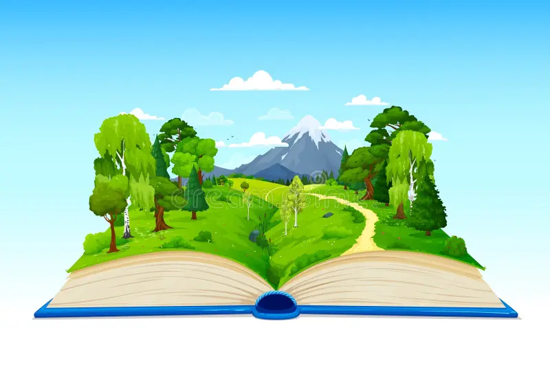
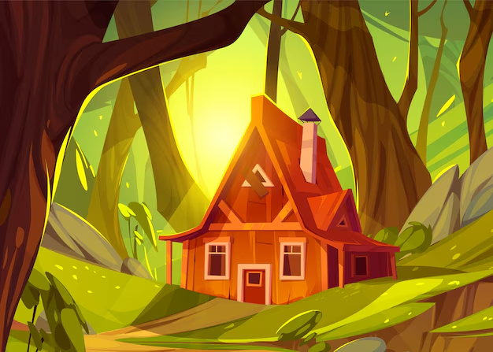

Bem-vindo à sua aventura! Faça suas escolhas e explore o desconhecido.
A floresta é densa e escura, mas você sente que algo te observa...
A montanha é íngreme e desafiadora, mas a vista vale a pena.
Você se aprofunda na floresta e encontra uma antiga cabana. Há sinais de que alguém esteve aqui recentemente.

Você decidiu que a floresta é assustadora demais e volta para casa. A curiosidade, no entanto, nunca o deixará em paz...
Você desiste da subida e decide voltar para casa, sempre se perguntando o que teria encontrado mais alto na montanha.